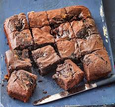

Chocolate Brownies
Home

Ingredients
- Unsalted butter (200 gr)
- 200 gr of dark chocolate chips
- Brown sugar (750 gr)
- 3 eggs
- 1 tbsp vanilla extract
- Plain flour (75 gr)
- Cocoa powder (30 gr)
- Pinch of salt
- Optional: Dark chocolate bar (6 oz)
Instructions
- Preheat oven to 180°C/350°F.
- Spray a 20cm/8″ square tin with oil and line with baking/parchment paper with overhang
- Place butter and chocolate chips in a heatproof bowl, microwave in 30 second bursts (takes me 1m 30 sec) until melted. Stir until smooth.
- Add sugar and vanilla, mix, then add eggs and mix well until smooth and molten.
- Add flour, cocoa and salt and stir until smooth. Stir in chopped chocolate, pour into pan.
- Bake 24 minutes for really gooey in the centre, 28 minutes for fudgey but still very moist (my favourie, shown in video & photos), 32 minutes for moist fudge-cake-like.
- Rest for 10 minutes before lifting out of the pan. Allow to cool for at least 20 minutes before cutting. Store in an airtight container for 4 days